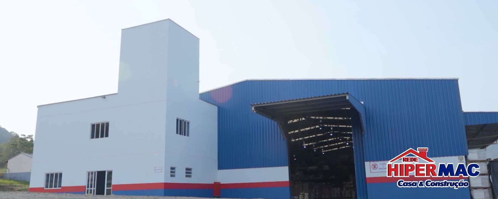

A Rede Hipermac Casa e Construção já nasceu pioneira, como uma iniciativa voltada para o
segmento de materiais de construção, com o intuito de promover a sustentabilidade das empresas
do ramo.
Fundada no final de 2005, na região do Alto Vale do Itajaí, a Rede Hipermac se estruturou a
partir de
reuniões entre os sócios, visando à compra conjunta e à criação de promoções baseadas nos
diferenciais
das empresas participantes.
Ao longo dos anos, estabelecemos várias parcerias que nos possibilitaram expandir e otimizar
nossas operações.
Com o objetivo de fortalecer o associativismo e promover mudanças na cultura empresarial,
a marca Hipermac unificou não apenas as fachadas das lojas, mas também a identidade visual da marca,
padronizamos uniformes, frotas, mídias digitais, tabloides, outdoors, crachás, embalagens entre
outros elementos.
De um simples grupo de compra a rede passou a ter um centro de distribuição, ainda pequeno.
Em 2016 o espaço foi expandido para 1.350m². Em 2020 houve um novo avanço: a construção da sede
própria do CD, em um terreno de 19.000m² com galpão de 1.700m².

Atualmente, a Rede Hipermac Casa e Construção conta com 18 lojas distribuídas em 14 dos 28
municípios do Alto Vale. Sua organização se dá por meio das comissões de Planejamento, Marketing e
Compras,
além dos conselhos Ético e Fiscal.
A Rede Hipermac é associada à
FEBRAMAT (Federação Brasileira de Redes
Associativistas de Materiais de Construção),
entidade que contribui para o desenvolvimento das redes associadas, promovendo o relacionamento
entre o
mercado e os associados, gerando oportunidades de negócios em abrangência nacional.